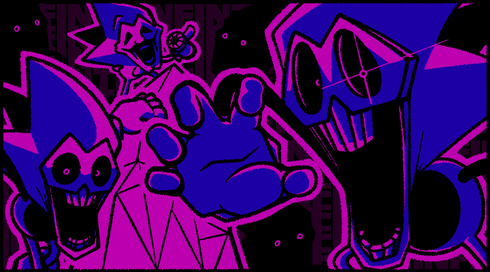
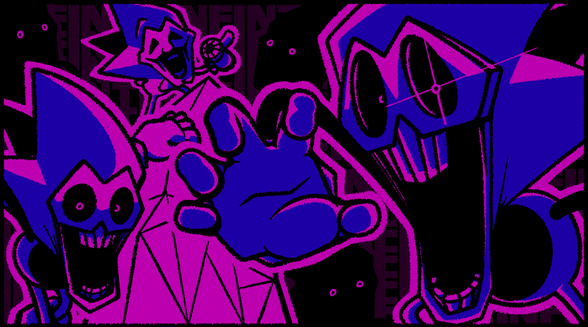
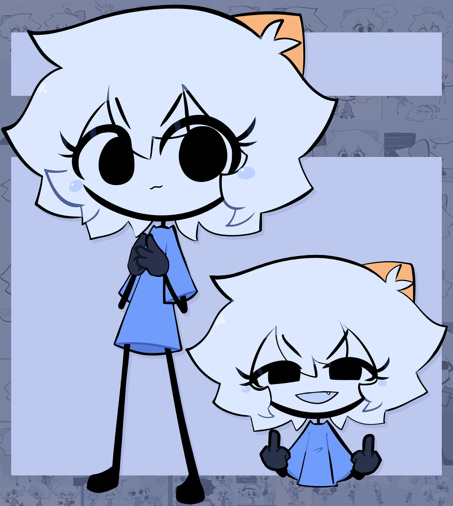
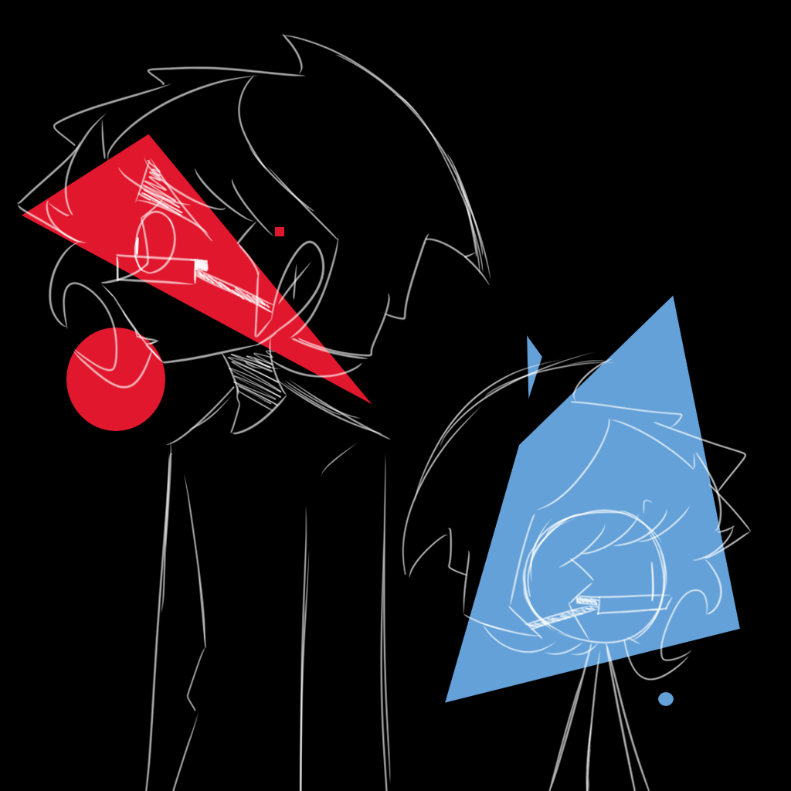
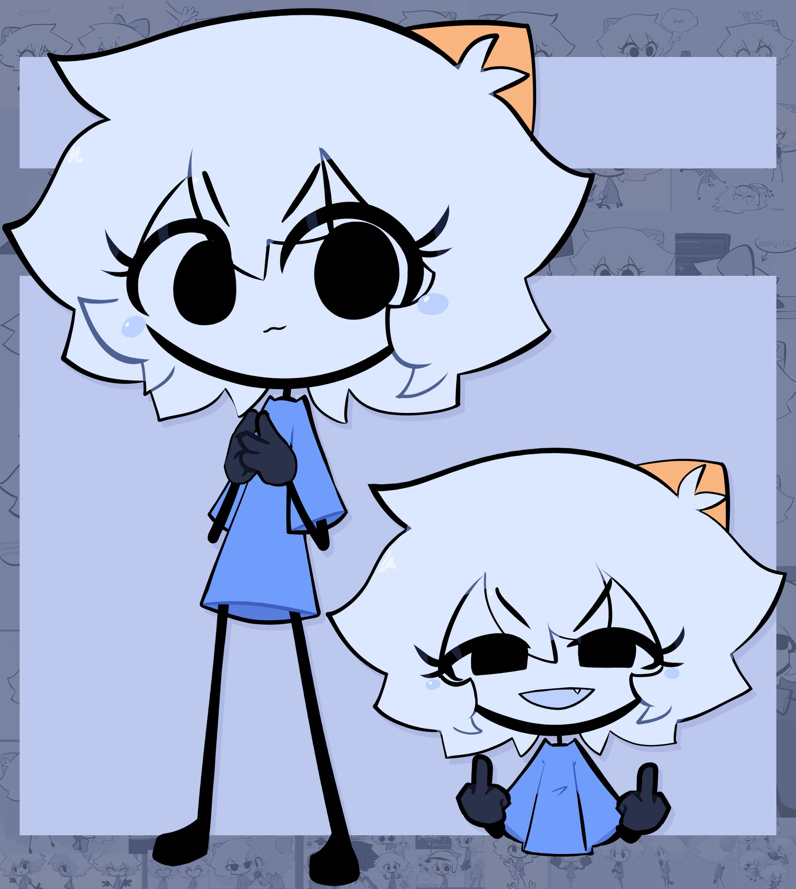
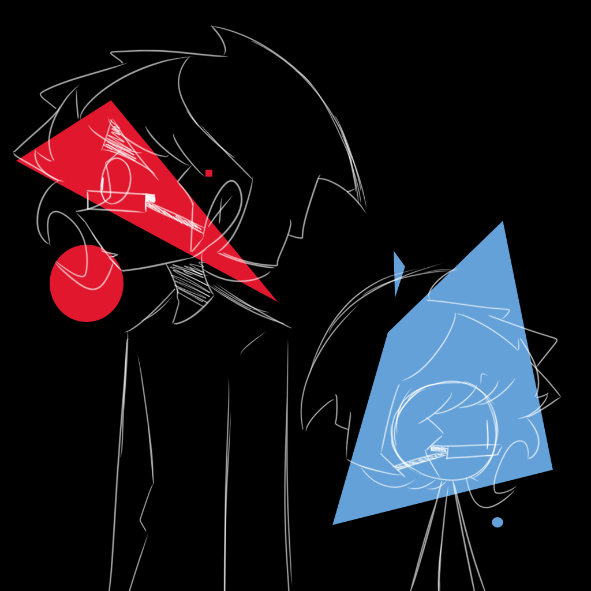

Arte Conceptual Para El Freeplay de Rerun:
Otro trabajo de diseño para el proyecto "Vs. Sonic.Exe Rerun", esta vez de arte de los personajes que estraran en el mod, solo son garabatos semi pulidos con colores forsforesentes y llamativos. Arte Lanzado Justo a Principios del 2024 (Sinceramente todavia no revelamos el proyecto completo por faltas de tiempo)

 


